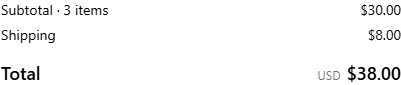
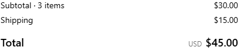
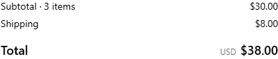

Switch shipping methods and check the total
With two red notebooks and one blue notebook in checkout, switching from Standard to Express raised shipping by $7.00. Switching back to Standard restored the $38.00 total. The subtotal stayed at $30.00 throughout.





